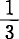
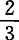
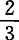

Ⅶ.两个部类的可变资本和剩余价值
每年生产的消费资料的总价值，等于当年再生产的第Ⅱ部类的可变资本价值和新生产的第Ⅱ部类的剩余价值（即等于第Ⅱ部类当年生产的价值），加上当年再生产的第Ⅰ部类的可变资本价值和新生产的第Ⅰ部类的剩余价值（也就是加上第Ⅰ部类当年生产的价值）。
因此，在简单再生产的前提下，每年生产的消费资料的总价值，等于年价值产品，即等于社会劳动在当年生产的全部价值。其所以必然如此，因为在简单再生产中，这全部价值将被消费掉。
社会总工作日分为两部分：1.必要劳动；它在一年中创造1500v的价值；2.剩余劳动；它创造1500m的追加价值或剩余价值。这两个价值之和＝3000，等于这一年生产的3000消费资料的价值。因此，一年生产的消费资料的总价值，等于社会总工作日在当年生产的总价值，等于社会可变资本的价值加上社会剩余价值，等于当年的全部新产品。
但是我们知道，虽然这两个价值量是一致的，第Ⅱ部类的商品即消费资料的总价值，绝不因此就是在社会生产的这个部类内生产出来的。这两个价值量一致，是因为在第Ⅱ部类再现的不变资本价值等于第Ⅰ部类新生产的价值（可变资本价值加上剩余价值）；因此，Ⅰ（v＋m）能够购买第Ⅱ部类的产品中对（第Ⅱ部类）产品的生产者来说代表着不变资本价值的那一部分产品。这就表明，为什么尽管对第Ⅱ部类的资本家来说，他们的产品价值分成c＋v＋m，但是从社会的角度来考察，这些产品的价值却可以分成v＋m。其所以如此，只是因为Ⅱc在这里等于Ⅰ（v＋m），社会产品的这两个组成部分通过交换来互相交换它们的实物形式。在这样交换以后，Ⅱc就再以生产资料的形式存在，而Ⅰ（v＋m）则再以消费资料的形式存在。
正是这种情况，使亚·斯密断言，年产品的价值分解为v＋m。这种看法，第一，只适用于由消费资料构成的那部分年产品；第二，其所以适用，并不是指这全部价值都是第Ⅱ部类生产的，因而它的产品价值等于第Ⅱ部类预付的可变资本价值加上第Ⅱ部类生产的剩余价值，而只是指：Ⅱ（c＋v＋m）＝Ⅱ（v＋m）＋Ⅰ（v＋m），或者说，因为Ⅱc＝Ⅰ（v＋m）。
由此进一步得出如下结论：
虽然社会工作日（即整个工人阶级全年耗费的劳动）和每个单个工作日一样，只分成两部分，也就是分成必要劳动和剩余劳动，因而，虽然这种工作日所生产的价值同样也只分成两部分，也就是分成可变资本价值即工人用来购买他自身再生产的资料的那部分价值，和剩余价值即资本家可以用于他自己的个人消费的那部分价值，但是从社会的角度来考察，社会工作日的一部分是专门用来生产新的不变资本的，也就是用来生产那种专门供在劳动过程中作为生产资料，从而在伴随而来的价值增殖过程中作为不变资本执行职能的产品的。按照我们的假定，整个社会工作日表现为一个3000的货币价值，其中只有＝1000是第Ⅱ部类生产的，这个部类生产消费资料，即生产那些最终实现社会全部可变资本价值和全部剩余价值的商品。因此，按照这个假定，社会工作日的是用来生产新的不变资本的。虽然，从第Ⅰ部类的单个资本家和工人的观点来看，社会工作日的这完全像社会工作日的其余的在第Ⅱ部类那样，仅仅用来生产可变资本价值和剩余价值；但是，从社会的角度来考察，——从产品的使用价值来考察也一样，——社会工作日的这只是生产那种正处于生产消费过程中的或已经耗费掉的不变资本的补偿物。个别地进行考察，虽然工作日的这生产的总价值对它的生产者来说只等于可变资本价值加上剩余价值，但工作日的这不生产可以使工资或剩余价值花费掉的那种使用价值；它生产的产品是生产资料。
首先必须指出，无论在第Ⅰ部类还是在第Ⅱ部类，社会工作日没有任何部分是用来生产这两大生产部门所使用的并在其中执行职能的不变资本的价值的。它生产的只是追加的价值2000Ⅰ（v＋m）＋1000Ⅱ（v＋m），这个价值是追加到不变资本价值＝4000Ⅰc＋2000Ⅱc中去的。以生产资料形式生产的新价值，还不是不变资本。它不过要在将来作为这种不变资本执行职能。
第Ⅱ部类的全部产品，即消费资料，就它的使用价值来考察，具体地说，就它的实物形式来考察，是第Ⅱ部类所提供的社会工作日的产品。它是这个部类所使用的具体形式的劳动，如织布劳动、烤面包劳动等等的产品，也就是这种劳动作为劳动过程的主观因素执行职能时所生产的产品。相反，第Ⅱ部类的产品的不变价值部分，只是再现在新的使用价值上，再现在新的实物形式即消费资料的形式上，而以前它是以生产资料的形式存在的。它的价值通过劳动过程，从它的旧的实物形式转移到它的新的实物形式上。但是，产品价值的这的价值＝2000，并不是在第Ⅱ部类当年的价值增殖过程中产生的。
从劳动过程的观点来看，第Ⅱ部类的产品是新执行职能的活劳动和现有的、作为这种劳动的前提的生产资料（劳动把它们作为自己的对象化条件而在其中实现）的结果。从价值增殖过程的观点来看也完全一样，第Ⅱ部类的产品价值＝3000，是由社会工作日新追加的所生产的新价值（500v＋500m＝1000）和一个不变的价值构成的。在这个不变的价值中，对象化着一个已经过去的、在我们所考察的第Ⅱ部类的生产过程开始以前就已经完结的社会工作日的第Ⅱ部类的产品的这部分价值，在这个产品的一部分中表现出来。它存在于一定量的消费资料中，其价值为2000＝ 社会工作日。消费资料是这部分价值借以再现的新的使用形式。消费资料的一部分＝2000Ⅱc，同第Ⅰ部类的生产资料＝Ⅰ（1000v＋1000m）相交换，事实上也就是并不形成当年劳动的任何部分而在本年以前已经完结的总工作日，同本年新追加的工作日相交换。当年社会工作日的，不能既用于不变资本的生产，同时又为它们自己的生产者形成可变资本价值加上剩余价值，除非把它们同每年消费的消费资料中一个包含着本年以前而不是本年耗费和实现的工作日的的那部分价值相交换。这是当年的工作日同在本年以前耗费的的工作日的交换，是当年的劳动时间同本年以前的劳动时间的交换。这样，下面这个谜就可以得到解释：尽管整个社会工作日的不是用来生产那些实现可变资本或剩余价值的物品，而相反地是用来生产生产资料，以补偿当年所消费的资本，但为什么整个社会工作日的价值产品却可以分解为可变资本价值加上剩余价值。简单说来就是：第Ⅰ部类的资本家和工人借以实现他们所生产的可变资本价值加上剩余价值的第Ⅱ部类产品价值的（构成全部年产品价值的），从价值方面考察，是本年以前已经过去的一个社会工作日的的产物。
社会工作日。消费资料是这部分价值借以再现的新的使用形式。消费资料的一部分＝2000Ⅱc，同第Ⅰ部类的生产资料＝Ⅰ（1000v＋1000m）相交换，事实上也就是并不形成当年劳动的任何部分而在本年以前已经完结的总工作日，同本年新追加的工作日相交换。当年社会工作日的，不能既用于不变资本的生产，同时又为它们自己的生产者形成可变资本价值加上剩余价值，除非把它们同每年消费的消费资料中一个包含着本年以前而不是本年耗费和实现的工作日的的那部分价值相交换。这是当年的工作日同在本年以前耗费的的工作日的交换，是当年的劳动时间同本年以前的劳动时间的交换。这样，下面这个谜就可以得到解释：尽管整个社会工作日的不是用来生产那些实现可变资本或剩余价值的物品，而相反地是用来生产生产资料，以补偿当年所消费的资本，但为什么整个社会工作日的价值产品却可以分解为可变资本价值加上剩余价值。简单说来就是：第Ⅰ部类的资本家和工人借以实现他们所生产的可变资本价值加上剩余价值的第Ⅱ部类产品价值的（构成全部年产品价值的），从价值方面考察，是本年以前已经过去的一个社会工作日的的产物。
第Ⅰ部类和第Ⅱ部类的社会产品之和，即生产资料和消费资料，就它们的使用价值来考察，具体地说，就它们的实物形式来考察，固然是当年劳动的产物，但是，只有当这种劳动本身被看作有效的、具体的劳动，而不是被看作劳动力的耗费，不是被看作形成价值的劳动时，才是这样。前面讲的一点，也只能从这个意义上去理解：生产资料只有通过加到它上面的、用它来进行操作的活劳动，才能转化为新的产品，转化为当年的产品。但是，反过来，如果当年的劳动没有那种在它之外独立存在的生产资料，没有劳动资料和生产材料，它也不可能转化为产品。